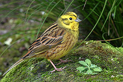
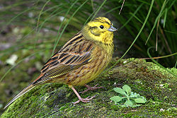

| Yellowhammer | |
|---|---|
|  | |
| Conservation status | |
| Binomial name | |
| Emberiza citrinella Linnaeus, 1758 |
| Yellowhammer | |
|---|---|
|  | |
| Conservation status | |
| Binomial name | |
| Emberiza citrinella Linnaeus, 1758 |
The Yellowhammer, Emberiza citrinella, is a passerine bird in the bunting family Emberizidae, which breeds across Europe and much of Asia. In parts of Europe it is in serious decline; in the UK the species fell by 54% between 1970 and 2003. In Europe and Asia most birds are resident, but some far northern birds migrate south in winter. It is common in all sorts of open areas with some scrub or trees and form small flocks in winter.
The Yellowhammer is a robust 15.5–17 cm long bird, with a thick seed-eater's bill. The male has a bright yellow head, yellow underparts, and a heavily streaked brown back. The female is much duller, and more streaked below. The familiar, if somewhat monotonous, song of the cock is often described as A little bit of bread and no cheese.
Its natural diet consists of insects when feeding young, and otherwise seeds. The nest is on the ground. 3-6 eggs are laid, which show the hair-like markings characteristic of those of buntings.

{kind=link}
{kind=link}